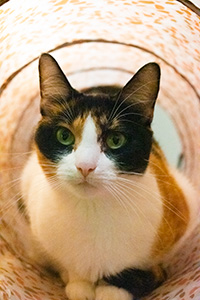
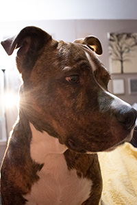
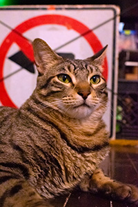
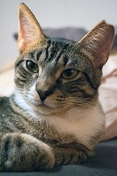
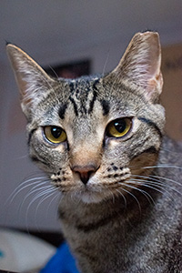
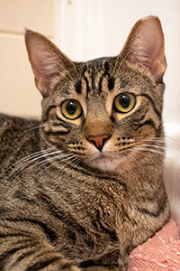
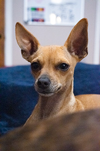
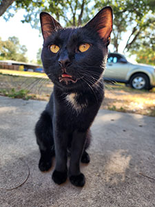

| HUMANS | DOGS | CATS |
|---|---|---|
 This is Little Bit. We have had Little Bit for five years now. I found her on craigslist when she was just a baby. She was being given away for free along with her siblings and their mother. When we got her home she was very dirty, hungry, and did not trust anyone. At the time we had another cat named Freddles who showed her that she could trust us. Now she loves to cuddle up with with her favorite person, play with the cat toys when nobody is looking, carry socks around the house and deliver them to the people she loves and steal food off of people's plates.
 This is Ricky Roo or just Rick. Rick is also five years old. Rick was adopted from the animal shelter when he was just acouple of months old. We used to go a few times a month just to walk the dogs and play with the cats but we never adopted, until we met him. Originally his name was buttons. For some reason that day we just could not stand the thought of leaving the shelter without him. He has been a huge part of our lives ever since. He hates bathsand getting groomed but loves wearing clothes. He gets very excited for winter when he gets to wear his winter outfits.
 This is Georgie Porgie, Georgie for short. Georgie is four years old. Georgie was found in the middle of the road and brought to my fiance's work at the time, he wasn't ready to be weened yet and the women who rescued him didn't know what to do so we brought him home to take care of him and he's been with us ever since. Georgie has the personality of a grumpy old man and doesn't get along well with most of the other animals or people in the house. He is my baby though. He sleeps with me everynight or any time I lay down and throws a fit if he gets kicked out of my room. He also loves cheese-its.
This is Dora The Explorer. Our neighbors have an outdoor cat that was not fixed at the time who felt safe enough with us to have her kittens under our house, Dora is one of those kittens they all turned one this year. She is fearless and was the first one to come out from under our house to meet my fiance and I. We live near a busy street and one of our other neighbors has chickens that he will kill to protect so we decided to bring the kittens inside when they were old enough, get them fixed and adopted out. That didn't really go to plan. Dora is now our expert bug tracker and a part of our family
This is The Girl With No Name Meg Thomas but we call her Meggles for short. She is Dora's sister and is the more skittish of the three kittens. We do not get to see her often, she prefers to sleep hidden away but every once in a while she really wants attention and will follow someone around the room meowing at them until the love her. Occasionally she will also pick someone to cuddle with for a couple of hours. Meggles is an absolute sweetheart, she takes good care of her brother. She does like to play with the cat toys, cat tunnels are her favorite and she loves cat treats.
This is Antonio Gato but we call him Antonio for short, sometimes tonito and he is Dora and Megles brother. This sweet little boy is the reason we foster failed with all three kittens. Antonio is mentally handicaped. He takes a lot longer to learn how to do basic things like drinking water, cleaning himself, getting food. All of the other cats in the house help him but his sisters help most of all. He gets scared very easily and relies on both of them for social cues as to decide if a situation is okay. Because of this we opted not to seperate this kitty trio.
This is Leia May. I found Leia two years ago driving to HEB. At the time she was just a tiny little puppy no bigger than an apple that I could hold in the palm of my hand. She was crumpled up in the middle of the road like trash and I almost didn't see her. She was so dirty and scared and weak. I took her home to get her cleaned up and fed. She would shake every time I set her down so for the first six months of her life I held her all the time and took her everywhere. She's a lot more independant now, she even tried to guard our yard but she still loves to be cuddled.
This is Bruno. Bruna was the most recent cat to move in under our house. The first day we met him, my fiance and I had just come home from dropping our kids off at school and there he was sitting on our front steps. He made it very clear that he wanted nothing more than to be loved. We got him fixed and brought him inside to care for and evaluate him but we didn't know the extent of his health problems. Bruno passed away September 7th after having been with us for less than a month. We loved Bruno every day he was with us and will hold him in our hearts forever.
That's a great question. I don't now if you noticed but out of the 8 animals that I just talked about, 7 of them were strays picked up off the streets. This is a problem, I can't take care of every stray in San Antonio by myself, as much as I would love to. Now you might be asking yourself "well what I can I even do about it?" and I'm glad you asked. One of the most resposnible things that you can do is get your animals fixed and keep them indoors, this extends their lives significantly and helps control the stray population in our city. If you don't have animals but have strays in your area you can still help, the city of San Antonio has some great information here about the cities Trap/Neuter/Return programm which they say has proven to be the only long-term solution to humanely control cat populations and it's free, they provide you with the equipment and offer the surgery at no cost. It just takes a little bit of your time. Also, you don't have to keep the cats like I did, you can release them back into the area after surgery, that choice is yours.
Now if you would like to know a little bit more about how we coexist with 7 animals you can click here